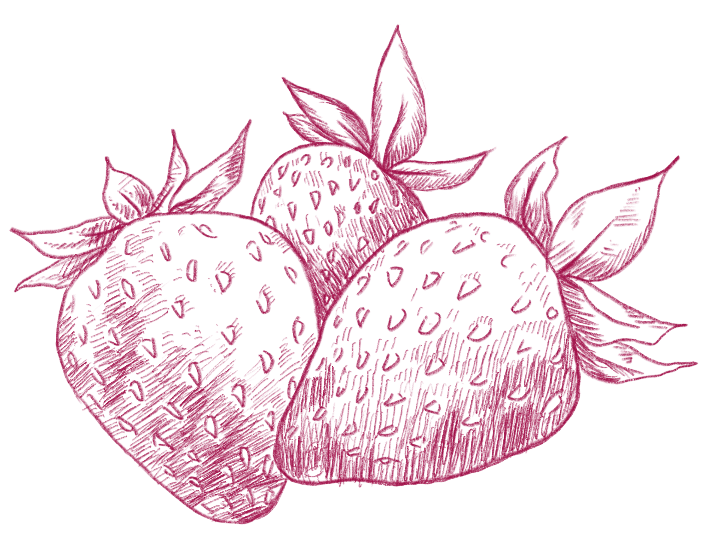

There is no such thing as too many strawberries. Here is a link to a strawberry mojito mocktail!
BERRY BUBBLY:
RECIPE
INGREDIENTS:
DIRECTIONS:
SERVE:
Finish it off by garnishing with more strawberries. Sip on Berry Bubbly as the spring season begins to bloom!
